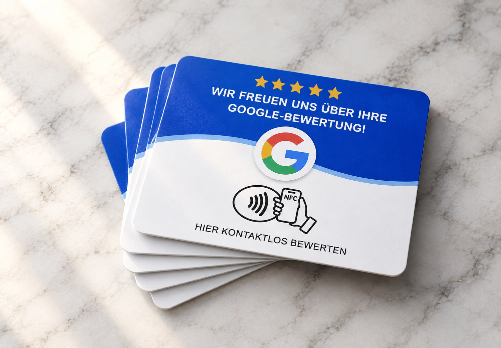

Kurz halten
Die Geste dauert einen Atemzug. Danach entscheidet jede Person selbst, ob sie schreibt.
Hintergrund
NFC klingt technisch. Im Alltag ist es nur eine Geste: das Telefon an etwas halten, das schon da liegt.
Was ist NFC?
NFC steht für Near Field Communication. Zwei Geräte tauschen Informationen aus, wenn sie wenige Zentimeter voneinander entfernt sind. Das TapKärtchen trägt einen winzigen Chip. Das Smartphone erkennt ihn und öffnet die hinterlegte Adresse — hier die Google-Bewertungsseite.
Es braucht keine extra App, kein Login, kein langes Tippen. Die meisten neueren Telefone können das von Haus aus.

Im Kern
Die Geste dauert einen Atemzug. Danach entscheidet jede Person selbst, ob sie schreibt.
Bewertungen helfen anderen, einen Ort einzuschätzen. Das Kärtchen macht den Weg dahin nur leichter.
Kein Download, kein Konto, kein weiterer Bildschirm im Laden.
Die Karte öffnet eine öffentliche Google-Seite. Nichts wird im Hintergrund versteckt.

Das Kärtchen ist klein, matt und ruhig in Navy. Es soll neben Tassen, Scheren und Schaufenstern nicht schreien — sondern dazugehören.

Am besten liegt es dort, wo ein Besuch endet: an der Theke, beim Bezahlen, neben dem Spiegel. Nicht in der Hand der Gastgeberin — auf dem Tisch.
„Manchmal braucht es nur einen kürzeren Weg — nicht mehr Überzeugung.“
Hinweis
Ein TapKärtchen lädt ein. Es drängt nicht. Wer nichts schreiben möchte, lässt das Telefon in der Tasche. Genau diese Leichtigkeit ist Teil der Idee.